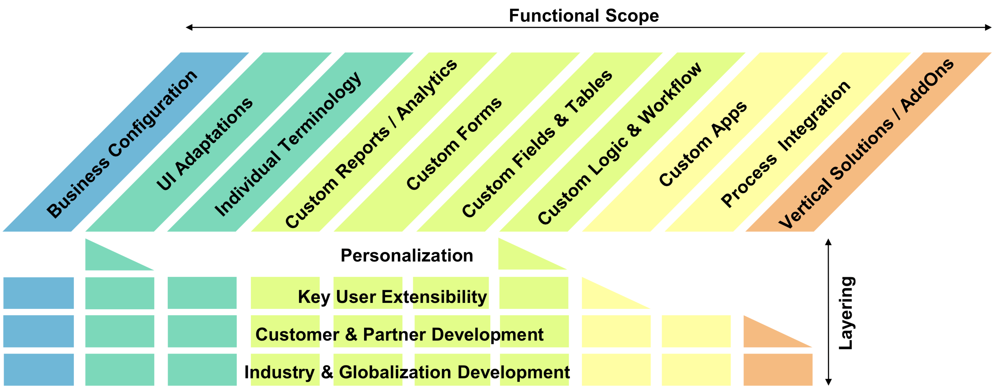
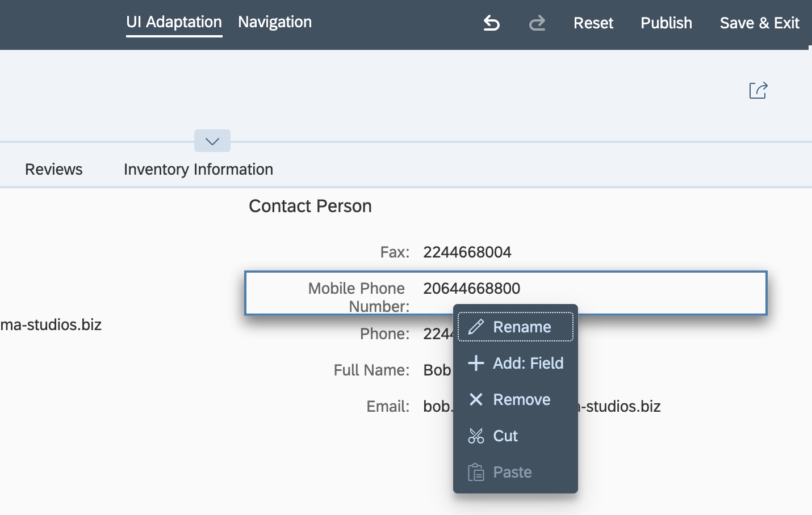
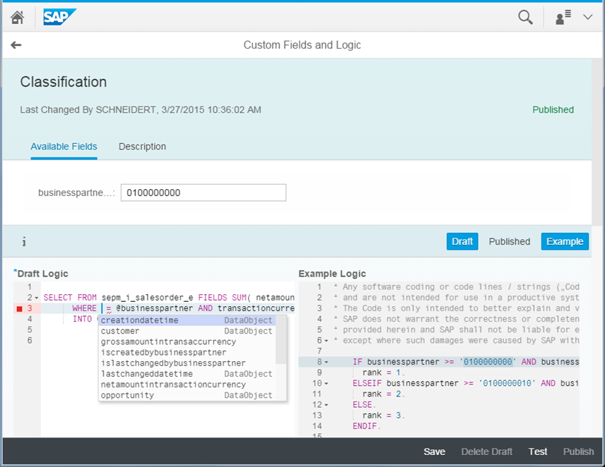
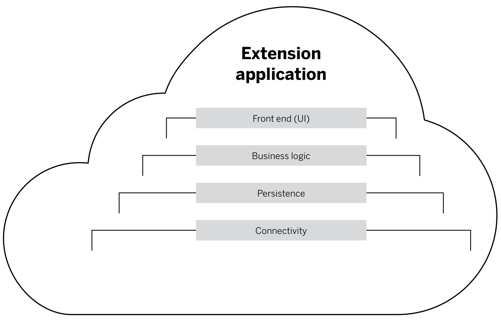
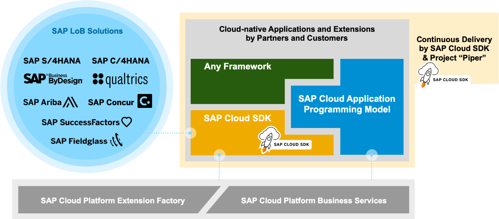
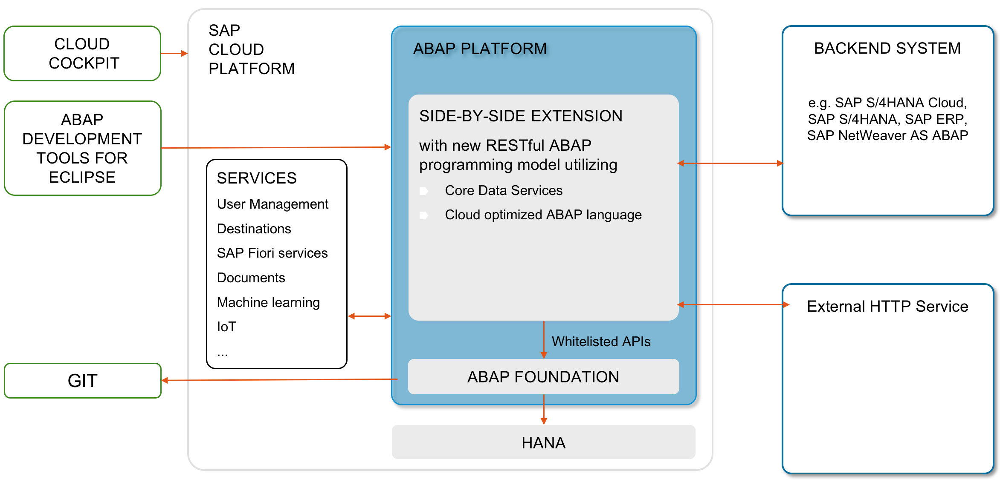
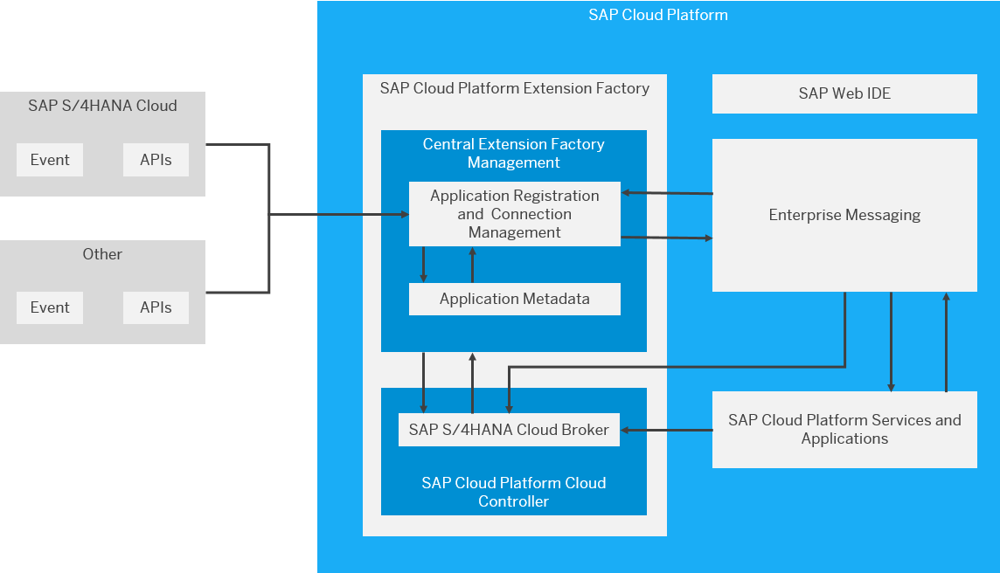

Gregor Wolf
Technische Optionen für die
S/4HANA (Cloud) Erweiterung
In-App und Side-by-Side
SAP TechEd 2018, Barcelona:
“Keep the Core Clean”
Björn Goerke,
Former SAP CTO & President SAP Cloud Platform
Spektrum der Erweiterungsmöglichkeiten
UI Adaptation - Demo
Analytical Apps
Fiori Apps LibraryBenutzerdefinierte Geschäftslogik
Side-by-side Extension Application Layers
SAP Cloud SDK & CAPM
SAP Cloud Platform, ABAP Environment
SAP Cloud Platform Extension Factory
Zusammenfassung
- "Keep the Core clean"
- Soweit es geht mit Customizing und In-App-Erweiterungen auskommen
- Side-by-Side Erweiterungen genau planen
Vielen Dank
Ihre Fragen ...
Contact
Gregor Wolf,
Computerservice Wolf
gregor@computerservice-wolf.com
Twitter: @wolf_gregor
| Präsentation | Business Card | ||
|---|---|---|---|
 |
Links
- Whitepaper: SAP S/4HANA and SAP S/4HANA Cloud Extensibility for Customers and Partners
- Präsentation: S/4HANA In-App Extensibility Overview
- help.sap.com: SAP S/4HANA 1809 FPS02 Extensibility
- SAP Extensibility Explorer for SAP S/4HANA Cloud
- Tutorial Group: Create a Custom UI for S/4HANA Cloud
- SAP Fiori for S/4HANA